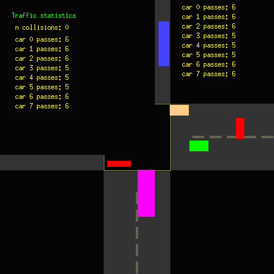

CMPS 3600 · Lab 15
Semester project
The semester project, built in phases on the instructor's X11 framework. Phase 2 launches programs from a window with fork and execve, phase 3 shows live CPU usage, and phase 4 runs the traffic simulation with a statistics window in a separate process fed through IPC.
What I did
- Phase 2 (
bbphase2.c): pressing C forks and runs the same program again withexecveto open a child window. A and B send itSIGUSR1(change color) andSIGUSR2(close), X starts or stopsxeyes, and aSIGCHLDhandler tracks which one ended. - Phase 3 (
bbphase3.c): read/proc/statand drew a smoothed usage bar for each core. - Phase 4 (
bbphase4.c): pressing W forks and runs the program again with a marker argument, and the new process becomes the statistics window. - Sent the collision count and each car's pass count through a message queue (
msgsndwithIPC_NOWAIT), kept a summary in shared memory, and sent the parent window's position through a non-blocking pipe so the stats window follows it. - Added a pause key (P) with an on-screen banner, and kept
phase4_bak.cas a backup from before that change.
What I used
- C
- X11
- fork and execve
- Message queues
- Shared memory
- Pipes
- POSIX threads
Concepts:
- Processes and threads together
- Shared memory
- X11 graphics
Libraries
| Header or module | What it is for |
|---|---|
X11/Xatom.h | X11 atoms (used to catch the window's close button) |
X11/Xlib.h | Xlib: opening windows, drawing and reading events (X11) |
X11/extensions/Xdbe.h | X11 double-buffer extension for smooth animation |
X11/keysym.h | X11 key names such as XK_Escape |
fcntl.h | open and its flags |
pthread.h | POSIX threads and mutexes |
signal.h | Signals: sigaction, kill and signal sets |
sys/file.h | open and its flags |
sys/ipc.h | System V IPC keys (ftok) |
sys/msg.h | System V message queues |
sys/shm.h | System V shared memory |
sys/wait.h | wait and waitpid for child processes |
unistd.h | POSIX calls such as read, write, fork, pipe and sleep |
C standard library: math.h, stdio.h, stdlib.h, string.h, time.h.
Linked with -lX11 (Xlib), -lXext (X11 extensions (double buffering)), -lpthread (POSIX threads).
How to build and run
From the folder with the code:
make
./bbphase4Requires: Linux with gcc and POSIX threads. The graphical labs also need the X11 development headers (sudo apt install libx11-dev libxext-dev on Ubuntu). Every folder has a Makefile.
Snapshots
Real runs of the program, captured in a terminal or on a virtual screen.
The capture screen has no window manager, so the stats window sits over the corner of the main window. Built with -fno-stack-protector for the same render() buffer overrun as lab 9.


Files
| File | What it is |
|---|---|
bbphase4.c | Phase 4: the traffic simulation with a separate statistics window. |
phase4_bak.c | Backup of phase 4 from before the pause feature. |
bbphase3.c | Phase 3: live CPU usage per core. |
bbphase2.c | Phase 2: launching a child window and xeyes from the main window. |
myxwindow.c | The lab 4 window program, kept as the starting point. |
Makefile | Builds all four programs. |
foo | Empty file used by ftok to build the IPC key. |
log | Empty log file the program writes to. |
| File | What it is |
|---|---|
cleanipc.sh | Removes a user's leftover semaphores, queues and shared memory. |